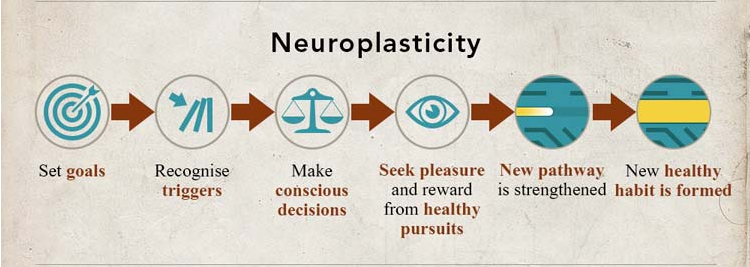

It is the understanding that experiences are able to change our brains, and that our brain’s structure and capacity are not fixed.Neuroplasticity offers the prospect of new ways to improve learning and education, physical rehabilitation, mental illnesses and addiction.
In a growth mindset, people believe that their most basic abilities can be developed through dedication and hard work—brains and talent are just the starting point. This view creates a love of learning and a resilience that is essential for great accomplishment.